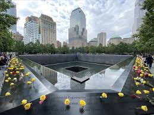
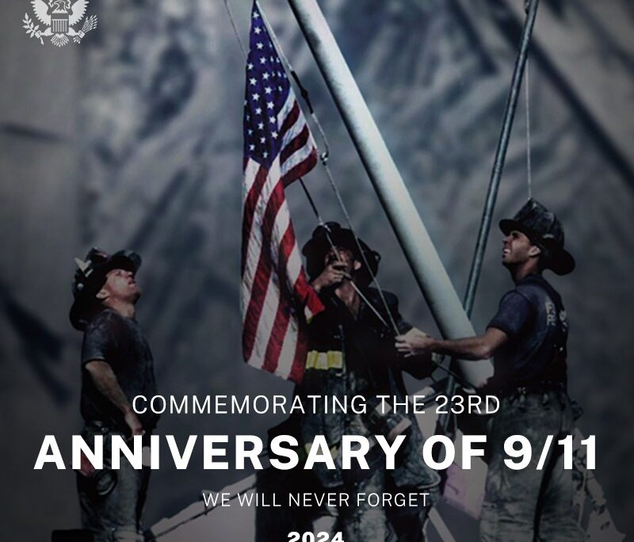

Homenajes
Se construyó el One World Trade Center en el lugar de las Torres Gemelas. Además, se erigió el 9/11 Memorial con los nombres de las víctimas grabados y dos fuentes en la base original de las torres.
En muchas escuelas, tanto en EE. UU. como en el mundo, se dedican minutos de silencio o actividades educativas para reflexionar sobre el atentado. tambien Hay monumentos en Washington D.C. (Pentágono) y en Shanksville, Pensilvania, donde cayó el vuelo 93.
- Otras ciudades en EE. UU. y el mundo también han erigido memoriales para recordar a las víctimas.
Documentales, películas y series también mantienen viva la memoria y enseñan las lecciones del 11-S. Instalación artística temporal que proyecta dos columnas de luz hacia el cielo donde estaban las Torres Gemelas.


Homenajes a las Torres Gemelas
| Nombre | Ubicación | Tipo de Homenaje | Año |
|---|---|---|---|
| 9/11 Memorial | New York, EE.UU. | Monumento con fuentes | 2011 |
| One World Trade Center | New York, EE.UU. | Rascacielos conmemorativo | 2014 |
| Tribute in Light | New York, EE.UU. | Luces hacia el cielo | Cada 11 de septiembre |
| Flight 93 Memorial | Pennsylvania, EE.UU. | Parque nacional |